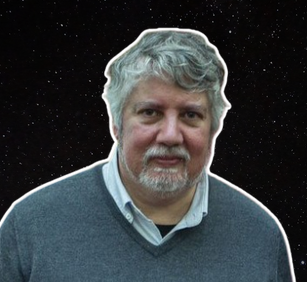

Sou investigador do Instituto de Astrofísica e Ciências do Espaço (IA), e professor na Faculdade de Ciências da Universidade de Lisboa. Estudo as atmosferas de Vénus e Marte, e observo estrelas que são temporariamente ocultadas por asteroides. Sou especialista na deteção e caracterização de asteroides e outros objetos que se encontram para além da órbita de Neptuno, chamados trans-neptunianos. Recentemente, fui homenageado pelo Grupo de Trabalho para a Nomenclatura de Pequenos Corpos (WGSBN) da União Astronómica Internacional (IAU), com a atribuição do meu nome a um asteroide.
Para ti, o que é a astrobiologia?
Uma tentativa de resposta à pergunta: Será que estamos sozinhos no Universo? Por outro lado reside na tentativa de compreensão de como apareceu a Vida, de como se formaram os seus componentes fundamentais e, em última análise, tentar vislumbrar como se deu a sua "ignição": a Génese da Vida.
Qual é o potencial das luas do sistema solar terem vida?
É um potencial elevado. Por um lado, os "mundos oceano" como Europa e Encélado contêm os 3 vértices do triângulo da Vida: água, moléculas orgânicas complexas e uma fonte de energia (hidrogénio molecular). Também é de ter em conta que as intensas forças maré libertam energia, que produz um aumento da temperatura da água para valores consentâneos com a Vida (como a conhecemos). Por outro lado, Titã é um laboratório natural para a química orgânica e a sua atmosfera é muito similar à atmosfera da Terra primordial, daí que seja muito relevante o seu estudo.
Qual a importância de estudar asteróides para a astrobiologia?
Os asteróides são quase como cápsulas do tempo. Devido à sua massa diminuta, o seu material não é alterado geologicamente. Assim podemos ver como era o material de base à formação do Sistema Solar, e antever a lógica da diferenciação entre os vários planetas e da sua composição base.
Que conselho dás aos futuros astrobiólogos portugueses?
Mantenham o Sonho. Tentem procurar o equilíbrio entre a especialização necessária para poderem investigar nesta área, e uma visão abrangente, necessariamente, transversal a várias áreas do saber como a química, física, biologia e até à ciência da informação... e filosofia.
Em que planeta gostavas de passar férias?
Prefiro a Terra, único planeta conhecido onde ocorreu a "tempestade perfeita" que permitiu o advento da habitabilidade de "largo espectro". Mas não desdenho ir a Marte, talvez explorar as zonas costeiras do hipotético oceano "Borealis" a ver se encontro alguma conchinha no meio das argilas, ou escarafunchar um pouco do solo a ver se descobrimos alguma bactéria... verde, pois claro!